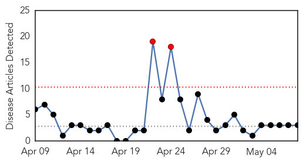
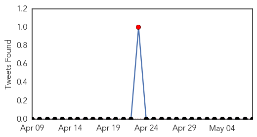
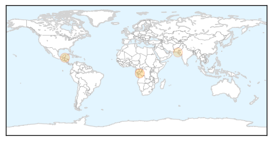

Meningitis
30-Day Web Trend
2 alerts, 0 warnings

30-Day Twitter Trend
1 alerts, 0 warnings

Article Locations
Article Confidences
Top Articles:
Top Tweets:
-
No tweets found for May 08, 2015
Hepatitis
30-Day Web Trend
1 alerts, 0 warnings
30-Day Twitter Trend
0 alerts, 0 warnings

Article Locations

Article Confidences

Top Articles:
- 0.989
- Hepatitis A outbreak prompts health warnings
- 0.851
- Hepatitis C rates jump in 4 central Appalachian states, CDC says
- 0.848
- Experts raise alarm over growing Hepatitis C disease burden
- 0.779
- Rajasthan witnesses 10% increase of children with Thalassaemia every year: Health minister
- 0.715
- Indiana HIV outbreak may be peaking, officials say
- 0.671
- Action committee formed to manage hepatitis cases in Punjab
- 0.661
- New Drugs Eliminate 93% Of Cases In Trial
Top Tweets:
-
No tweets found for May 08, 2015